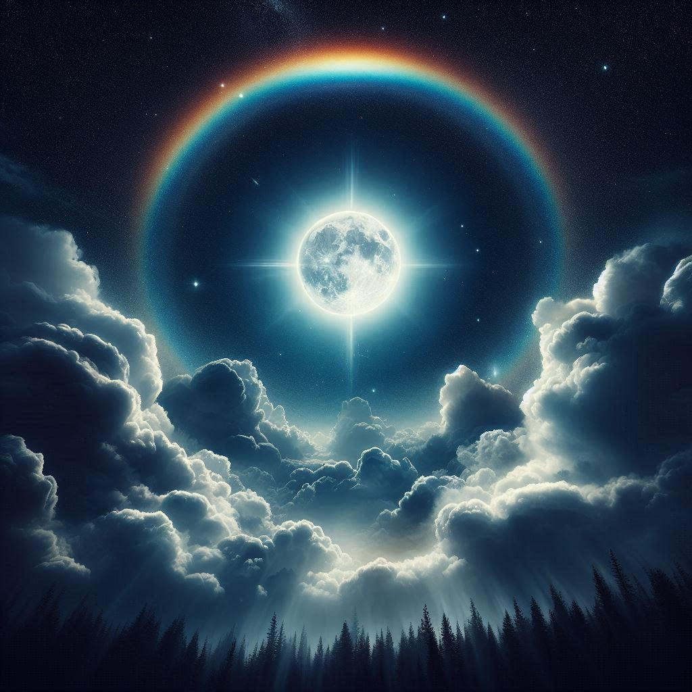
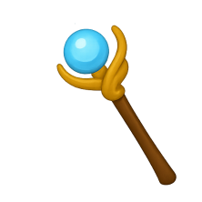
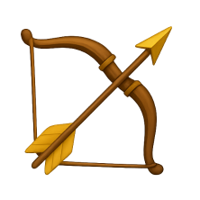
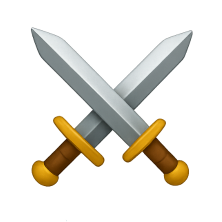

Faltan minutos para que sea el año 9999, mañana es el solsticio. Esta noche hay luna llena. Han pasado 554 días desde que inició la guerra en las tierras de Balbalún. El rey Korphuz de Coltagún, ha azotado el reino de Balbalún con el afán de conquistarlo. Para poder lograrlo ha negociado con Zumitis, la mano derecha del Mal, haciendo sacrificios con lo cual ha obtenido un dragón que le ha dado una ventaja táctica durante todos estos días. A cambio Korphuz deberá alimentar a la oscuridad con odio y dolor del pueblo de Balbalún, los esclavizarán y los condenarán a la desolación. Además usarán todos los árboles del reino para alimentar la llama oscura.
Rata Blanca - El reino olvidado (AUDIO)
Raugan, el mago de Balbalún sabe que esta noche se abrirá una oportunidad para derrotar al Dragón con el poder del cielo. Allí, en el lugar preciso, se encuentra él llevando el báculo de fuego escoltado por Fortán, el arquero, y Arthimest, el caballero del rey, los tres en sus caballos hacia el frente de la batalla a las afueras del castillo principal de Balbalún en las montañas minutos antes de la medianoche.
Las flechas no dejan de caer, los soldados cruzan sus espadas, a lo lejos sobrevuela el dragón. “Es hora” dice Arthimest. Raugan invoca el ritual del solsticio. De repente la luna es cubierta por nubes, el cielo se oscurece. De la nada se genera una tormenta. El dragón baja y empieza a escupir fuego hacia los frentes de soldados que evitan que las tropas de Korphuz se acerquen al castillo.
Rata Blanca - Tormenta Eléctrica (Video Lyric)
El báculo empieza a brillar y Raugan apunta al dragón. Desde el cielo cae un rayo rojo intenso que ilumina la noche. Este rayo golpea justo sobre el dragón. El dragón cae. Ha muerto.
La batalla se detiene por un momento, todos están perplejos. Empieza a caer lluvia. La luna vuelve a aparecer de entre las nubes con un halo de arcoíris.
Arthimest le grita a sus soldados: “El dragón ha caído, ustedes ahora son los Guerreros del Arcoíris!!!”. Los soldados festejan a los gritos. Arthimest dice “Ahora ayúdenme a derrotar a este ejército, ¡Por Balbalún!”, los soldados responden “¡Por Balbalún!”
Rata blanca - Guerrero del Arco Iris
El ejército de Korphuz fue derrotado en días, la mitad de sus tropas cayeron en todo el reino y el resto decidió retirarse. Pero Zumitis apareció y pidió al reino que compensara a la oscuridad con aquello que no tendría del reino. Fue entonces que Raugan decidió sacrificarse por el reino y a cambio aislarse de los humanos si decidía saldar su deuda.
El Mal decidió que la soledad del mago de Balbalún era un buen trato así que Zumitis aceptó y finalmente el reino pudo conseguir la paz. A cambio Raugan debería alejarse de todos los humanos hasta el final de sus días. Así que el rey de Balbalún construyó una torre en medio del bosque más alejado y lo dejó allí.
Para evitar que otro humano entrara al bosque Zumitis lo encantó.
Raugan pasaba gran parte de su tiempo leyendo y aprendiendo más magia.
Pasaron los años. 15 años desde aquella fatídica guerra.
Últimamente el mago se sentía muy amargado sin la compañía de nadie. ¿De qué sirve tener tanta magia y poder si no hay nadie alrededor? De día Practicaba hechizos pero de noche, la soledad le pesaba y no podía dejar de sentirse solo. Solo la luna era testigo de sus noches de desvelo y tristeza.
Un día en el medio del bosque sintió la presencia más dulce que jamás había sentido. Se dio vuelta pero solo había un rastro de polvo brillante. Decidió seguirlo.
Al final del rastro había un hada con un a la rota. El mago se le acercó.
Hada: ¡Aléjate!
Raugan: ¡Disculpa! Solo deseo ayudar.
Hada: ¿Deseas? ¡Típico! Un humano deseando. Pues yo no soy tu hada, no cumpliré tu deseo.
Raugan: Es a ti a quién deseo ayudar.
Hada: ¿A mí? Yo no te he pedido que me ayudes.
Raugan: Veo que tienes un ala rota, puedo curarla.
Hada: ¿Acaso eres curandero?
Raugan: Permíteme presentarme: Soy Raugan, mago de Balbalún. Y este es mi bosque encantado en el que te encuentras. Como anfitrión debo asegurarme de que todas las creaturas aquí estén a salvo. Es mi deber ayudarte.
Hada: Es extraño, en general soy yo la que ayuda a los humanos.
Raugan: ¡Déjame hacerte un hechizo de sanación!
Hada: Te lo advierto, soy un hada muy poderosa, si te atreves a hacer algo malo lo lamentarás.
Raugan: Solo cumplo con mi deber de caballero. Con su permiso voy a hacerle el hechizo. “ANAR ED ATILOC. ANAS, ANAS”.
(El ala del hada se repara)
Hada: ¡Gracias!, Parece que sí eras mago después de todo.
Raugan: ¡Fue un placer ayudarte!
Hada: Creo que te debo un deseo. ¡A ver!, terminemos de una vez ¿Cuál es tu deseo, mago del bosque?
Raugan: Creo que mi deseo es invitarte una taza de té.
Hada: ¿Un té? ok, solo será una taza de té y me iré, debo ir a buscar un diente.
Raugan: ¡Excelente! Tengo varias hierbas aquí, manzanilla, té verde, boldo, citrus y frutos del bosque.
Hada: ¿Té de anís?
Raugan: No crece en este bosque pero puedo hacer que el de citrus sepa a té de anís
Hada: Bien, acepto ese.
Raugan: ¿Dime por qué se quebró tu ala?
Hada: Cuando pasaba por este bosque un encantamiento me hizo caer y se me enganchó un ala en una rama.
Raugan: Entiendo, ese encantamiento es para que no se acerque ningún humano
Hada: ¿Y tú como entraste aquí?
Raugan: Estoy aislado. No debo salir. Es una larga historia.
Hada: Cuéntame.
Raugan le cuenta la historia mientras beben el té
Raugan: …pero dejemos de hablar de mí, cuéntame algo de ti.
Hada: Pues, estoy recolectando dientes, justo ahora iba a la casa de Timmy, es un niño de 6 años que se porta muy bien. Hace caso a su mamá y a su papá, y le encanta jugar con su perro.
Raugan: Perdón que te interrumpa pero según mi juramento no debo saber nada de los humanos del exterior. Me encantaría saber pero no puedo romper el juramento.
Hada: Discúlpame, no quería hacerte romper el juramento.
Raugan: Descuida, no lo has hecho, yo no fui el que te pidió que me hables del mundo exterior pero no debo preguntar sobre eso ni insistir.
Hada: Entonces ¿de qué podemos hablar?
Raugan: De ti, quiero saber todo de ti ¿qué te gusta? ¿Cuál es tu animal favorito? ¿Cuál es tu lugar favorito? ¿De dónde vienes?
Hada: Bueno, me gusta el té de anís, como habrás notado, y mi animal favorito es el unicornio. Vengo de la Tierra de las Hadas y mi trabajo es recolectar dientes y cumplir deseos a los humanos que hagan buenas acciones.
Raugan: ¿Te gustan todas las flores?
Hada: Sí, me encantan, de hecho mi lugar favorito es el Prado de las Flores.
De repente su varita empieza a brillar.
Hada: Ha sido un rico té pero ya debo irme, Timmy se acaba de dormir, perdón, no quise darte información, lo que quise decir es que debo ir a cumplir mi trabajo.
Raugan: Entiendo, pero antes déjame hacerte un truco.
Hada: ¿qué?
Raugan: Ves este pañuelo
El pañuelo se quema y aparece una flor
Hada: ¡Ese truco es muy viejo!
Raugan: ¿Volveré a verte? Dime qué sí, por favor.
Hada: ¿Crees que un hada mágica como yo se fijaría en un mago solitario? Solo si me haces té de anís
Raugan: Mmmm, no puedo conseguir té de anís, pero puedo conseguir el mejor té. El "te beso"
El hada y Raugan se enamoraron. Se amaban todos los días.
Rata Blanca - Mujer Amante
El Hada se llama Nedavia.
Nedavia: ¿Por qué estás triste, Raugan? ¿Acaso no te hago feliz?
Raugan: Al contrario, Nedavia, el problema es que me haces demasiado feliz.
Nedavia: ¿Entonces? ¿Por qué suspiras?
Raugan: Es que temo que el Mal se interponga entre nosotros. No creí que me enamoraría tanto de ti. Tal vez deberías alejarte de mí.
Nedavia: ¿Qué me estás pidiendo?
Raugan: Sé que suena tonto, pero sabes que estoy maldito y te amo demasiado como para ponerte en riesgo.
Nedavia: No digas eso. Yo quiero estar contigo.
Raugan: Pero sabes que si el Mal se entera no me lo va a dejar fácil.
Nedavia: Yo elijo estar contigo, sin importar los riesgos. Somos una pareja y pase lo que pase lo enfrentaremos juntos.
Raugan: ¿Estás segura que quieres estar conmigo a pesar de estar maldito?
Nedavia: Sí, y no me vas a convencer de lo contrario.
Raugan: ¡Entonces casémonos!
Nedavia: ¿Qué? ¿Cómo nos vamos a casar?
Raugan: Esta noche, aquí en el bosque.
Nedavia: Ja, ja, ¿Y quién nos va a casar?
Raugan: Pues la luna nos casará.
Nedavia: ¿Y los testigos?
Raugan: Elije una estrella yo elegiré otra, ellas serán nuestros testigos.
Nedavia: ¿Y los anillos?
Raugan: Hice unos con hilos rojos. Simbolizando el hilo que nos une.
Raugan se arrodilla.
Raugan: ¿Me harías el honor de aceptarme en matrimonio?
Nedavia: ¡Sí, Acepto!
Esa noche Raugan y Nedavia se casaron a la luz de las estrellas.
Sin Tu Amor Nada Existe
Pero un día vino Zumitis.
Zumitis: ¡Raugan, haz faltado a tu juramento!
Raugan: Yo no lo he hecho, Zumitis.
Zumitis: Ahora estás saliendo con una mujer, debías estar solo, vengo a llevarme tu alma a la oscuridad.
Raugan: ¡Es mentira! Lo sabes bien, ella no es humana y mi juramento era no estar con humanos a cambio de que dejes al reino de Balbalún en paz.
Zumitis: Pero si tú no sufres no puedo alimentar a la oscuridad y el Mal, mi amo, enfurecerá.
Raugan: Ese no es mi problema.
Zumitis: Entonces, en nombre de la maldad, congelaré a tu hada.
(El hada cae congelada en un sueño profundo)
Raugan: ¡Noooo!
Zumitis: Ja, ja, ja, ja, eso es para que aprendas cuál es tu lugar aquí, Raugan. No vuelvas a interactuar con nadie más o ese será el destino.
Zumitis se va.
Rata Blanca - La Leyenda Del Hada Y El Mago (Audio)
Raugan intentó todos los hechizos que pudo para despertar a su amada pero fue inútil, la única forma de romper el hechizo es romper el sello que posee Zumitis. El sello es lo único que separa a Raugan de Nedavia.
Pero para destruir el sello debería ir a buscar a Zumitis y para ello debería salir del bosque. Entonces pensó que si salía del bosque pero no hablaba con ningún humano podría mantener su juramento. Así es que un día Raugan salió.
El reino de Balbalún estaba muy cambiado. Los pueblos estaban en ruinas, ya no había casas, los bosques, todos talados. Parecía que hubiesen habido muchas guerras desde que se fue al bosque así que Raugan caminó hasta la ciudad de Druitis.
Cuando llegó a Druitis estaba todo destruido, la gente se había marchado. A lo lejos vio un jinete que se detuvo para que su caballo beba agua. Se acercó y ya no lo soportó, decidió hablar con aquel soldado.
Cuando el soldado vio a Raugan sacó su espada. El soldado vestía con una armadura negra.
Soldado: ¿Quién eres tú?
Raugan: Hola, soy Raugan, mago de Balbalún. Vengo en paz.
Soldado: ¡Quedas arrestado en el nombre del rey Zumitis!
Raugan: ¿Qué? ¿Zumitis es el rey?
Soldado: ¡Tírate al suelo y pon tus manos en la espalda! ¡No te lo volveré a repetir!
Raugan hace un hechizo y le quita la espada. El soldado empieza a correr hacia su caballo. Raugan hace otro hechizo y la tierra traga los pies del soldado dejándolo clavado al suelo.
Raugan: Dime, soldado, ¿qué ha sucedido con el antiguo rey?
Soldado: Tú eres un mago, los magos son los enemigos de Balbalún.
Raugan: Contesta mi pregunta, ¿qué sucedió con el rey Dimitri?
Soldado: ¿No lo sabes? Zumitis conquistó todo el reino y mató al rey. Ahora él es nuestro máximo rey y es incuestionable.
Raugan pensó para sí mismo que Zumitis lo traicionó, él estuvo 15 años en el bosque para que Balbalún esté en paz pero en cuanto se fue las ciudades fueron destruidas y conquistó todo el reino. ¿Qué sentido tuvo su juramento todo este tiempo?
Raugan: ¡Sal de ahí como puedas, soldado, me llevaré tu caballo!
Raugan se va cabalgando directamente hacia la casa de su viejo amigo, Fortán, el arquero.
Rata Blanca - Viejo amigo (AUDIO))
Raugan llega a la ciudad de Jalkot. No todo está destruido allí, por suerte. Sabe que no debe mencionar que él es mago según lo que dijo aquel soldado: “los magos son los enemigos de Balbalún”.
La casa de Fortán está destruida. Entonces decide entrar a una cantina. Pregunta por Fortán al cantinero. El cantinero lo observa bien.
Cantinero: ¿Quién diablos eres tú?
Raugan: Solo un forastero que busca a su viejo amigo.
Cantinero: ¿Cómo te llamas?
Raugan: Mi nombre es Raugan.
Cantinero: ¿Raugan? Déjame un momento.
El cantinero se retira hacia una puerta. Sale Fortán.
Raugan: ¡Fortán, mi viejo amigo!
Fortán se acerca y le da un puñetazo.
Fortán: ¡Maldito! ¡Maldito! ¿Cómo te atreves a aparecer aquí? ¡He!
Raugan se levanta, Fortán se acerca a golpearlo otra vez.
Raugan: ¿Qué sucede?
Fortán: ¿Encima preguntas?
Fortán se acerca y le da otro golpe. Quiere dar un cuarto y Raugan lo golpea con su bastón. Se trenzan a golpes.
Fortán: ¡Maldito! ¡Nos abandonaste!
Raugan: ¡Tú sabes que me fui por el reino!
Fortán: ¿Y no se te ocurrió salir alguna vez para ver si no te mintieron?
Raugan: Yo estoy igual de indignado que tú
Raugan da otro golpe.
Fortán: Yo no me creo eso de que te engañaron.
Raugan: ¿Qué crees que siento al ver todo el reino en ruinas? ¡Vengo a matar a Zumitis!
Fortán: ¡Está bien! Paremos esta locura.
Raugan: Ese maldito me engañó.
Fortán: Ven te invito un trago.
Los dos se sientan en la barra, ensangrentados, y piden un trago.
Raugan: Dime, Fortán, qué fue lo que sucedió en el reino. ¿Cómo es que Zumitis es el rey?
Raugan cuenta cómo sucedió. Pocos meses después de que Raugan se instaló en el bosque Zumitis regresó con 2 dragones y varios ogros. Empezó a conquistar pequeñas aldeas y a esclavizar los pueblos, el rey mandó a sus ejércitos pero nada pudieron hacer con aquellas creaturas. Además Zumitis usó su magia para esclavizar soldados que se le fueron uniendo. Arthimest y Fortán lucharon pero el ejército de Zumitis era cada vez más grande. Pronto llegaron al castillo. Fortán luchó en otra ciudad y Arthimest se quedó a defender al rey. Todos fueron derrotados. Fortán sobrevivió entre los cadáveres y huyó hacia Jalkot. Al rey lo asesinaron.
Zumitis obligó a gran parte del pueblo a talar árboles para alimentar la llama oscura e incrementó los impuestos. Vive una vida de lujos y placeres.
Los únicos que podrían derrotar a Zumitis son los magos pero él los mandó a encerrar a todos. Tú eras el más poderoso.
A Arthimest lo mandaron a matar pero logró huir. Ahora se encuentra escondido en las montañas del este. Fortán cambió su nombre a Julius y es dueño de la cantina en la que se encuentran actualmente.
Fortán: ¿Y tú? ¿Por qué decidiste salir al fin del bosque?
Raugan: Por un hada.
Fortán: ¿Un hada? ¿Cómo es eso?
Raugan: Me enamoré de un hada pero Zumitis la congeló en un sueño eterno. Vengo a matarlo para despertar a mi hada.
Fortán: ¿Así que estás aquí por una mujer?
Raugan: Técnicamente no es humana.
Fortán: Ja, ja, ja, el viejo Raugan se ha enamorado. Ella debe ser muy especial para hacerte romper un juramento.
Raugan: Sí, sí lo es.
Fortán: ¿Cómo es ella?
Raugan: Ella es la mujer más bella que he conocido en mi vida. Aunque tiene 150 años luce muy bien. Desde que llegó a mi vida todo lo aburrido: tener que estar sembrando y cosechando verduras, alimentar a los conejos y gallinas, ya no me parecía aburrido. Al final del día era lindo volver a la torre y verla. Ella le dio color a mi vida. Ella, ella es un ángel.
Rata Blanca - Volviendo a Casa - Video Oficial
Raugan: Veo que aún andas bien con los puños. ¿Cómo andas con el arco?
Fortán: ¡En el blanco como siempre!
Raugan: ¿Entonces me vas a ayudar a darle una paliza a Zumitis?
Fortán: ¡Claro! Debemos ir a buscar a Arthimest y a Saltia a las Montañas del Este primero.
Raugan: Pues entonces partamos mañana al amanecer
Fortán: Deberemos tomar el camino antiguo e ir a toda velocidad ya que los soldados atacan a aquellos que se atreven a abandonar Balbalún.
Rata Blanca - El amo del camino (AUDIO)
Fortán y Raugan partieron a caballo por el camino viejo. En medio del viaje se toparon con 10 soldados montados que los empezaron a perseguir tirando flechas. Entonces Raugan echa un hechizo de humo que cubre sus espaldas y ambos toman un camino alterno perdiéndolos.
Más adelante se encuentran con un ogro y pasan lo suficientemente rápido para que el este no pueda seguirlos.
Finalmente llegan a la torre del valle donde hay otros arqueros. Fortán dispara varias flechas hiriendolos en el hombro. Salen de Balbalún.
Cabalgan hasta las Montañas del Este. Allí van hasta la granja de Saltia. Se encuentran con el marido de Saltia que inmediatamente la llama a ella.
Fortán: Saltia, la encantadora de bestias, ¿Cómo andas después de tanto tiempo?
Saltia: Viviendo una vida tranquila. ¿Qué los trae a las tierras de Coltagún?
Fortán: Venimos a reunir al equipo para derrotar a Zumitis.
Saltia: Eso es imposible, además ya me alejé de todo eso. ¡Es estúpido!
Fortán: ¡Vamos! Tú, que eras una de las más aguerridas, que eras conocida como “Señora Furia”, ¿te volviste solo una simple granjera?
Saltia: Pues sí, todos cambiamos. Vendí a mis animales mágicos. Ya me cansé de las guerras, prefiero vivir una vida tranquila.
Fortán: Está bien, pero te presento a mi amigo, Raugan, el mago de Balbalún.
Saltia: ¿Qué? ¿Él es Raugan?
Fortán: Sí, él es el famoso Raugan.
Raugan: Es un placer conocerla.
Saltia: ¡El honor es mío! Lo hubieras dicho antes, Fortán. Si tenemos a un mago sí podemos derrotar a Zumitis. No vendí mis animales los tengo escondidos en el establo del fondo.
Fortán: ¡Lo sabía!
Saltia: Tenemos que ir por Arthimest.
Fortán: Eso te venía a preguntar. ¿Dónde está él?
Saltia: El rey Korphuz lo hizo arrestar y está en los calabozos del castillo del pueblo. Él es el único que sabe cómo entrar al castillo de Zumitis. Ha estudiado durante años distintos planes para hacerlo pero no tenía sentido hacerlo sin un mago.
Fortán: Entonces iremos a rescatarlo.
Saltia: Antes, señor Raugan, ¿podría darme una demostración de su poder?
Raugan: ¡Por supuesto!
(Raugan toma su bastón y genera una bola de fuego que va hasta el cielo y explota como un fuego artificial)
Saltia: Bien, sí eres mago. Vengan, pasen a mi casa vamos a planear cómo sacar a Arthimest.
La familia de Saltia, Saltia, Raugan y Fortán se reúnen a almorzar, luego, la familia de Saltia se retira y los tres planean cómo sacar a Arthimest.
Saltia: Enviaré ya mismo a mi rata blanca para que entre al calabozo y le entregue una nota a Arthimest de que lo iremos a rescatar. Esta noche entraremos por la torre sur con mi león alado aunque primero debemos matar sigilosamente a los guardias para que no avisen al resto del ejército.
Fortán: Puedo derribar a los guardias con mis flechas.
Raugan: Escuchen, no es necesario matar a nadie, puedo preparar poción del sueño, untaremos nuestras armas con eso y solo bastará herirlos en lugares no mortales. Así no nos perseguirá el ejército de Korphuz
Fortán: Entonces apuntaré a lugares no letales.
Saltia: ¡Excelente! Pero adentro de la torre no sé qué otros soldados habrán. La idea es derrotar a todos los soldados que encontremos sin llamar la atención, y el mago nos puede ayudar con el tema de abrir rejas y puertas.
Raugan: ¡Sí!, eso no será problema.
Saltia: Saben que nuestras chance de éxito es igual a tirar una moneda. ¿Cómo se sienten con eso?
Fortán: Me he arriesgado con menos probabilidad.
Raugan: Lo haré aunque las chances sean 1 en 1000.
Saltia: Entonces ¡qué comience la función!
Fortán: ¡Esa es la señora furia que conozco!, ja, ja, ja.
Rata Blanca - Señora Furia
continuara...
................
Ahora es su turno de jugar...
Para jugar a Calabozos y Dragones se requiere de un narrador y varios jugadores. Se juega narrando y hablando. También se requieren de dados para agregar el azar del juego.
El narrador irá desarrollando las escenas, la aparición de personajes no jugables, las consecuencias de las acciones de los jugadores, etc.
Cada jugador controlará uno o más personajes, estos decidirán qué acciones realizan, qué dicen, qué decisiones toman cada uno de sus personajes. El narrador no puede controlar a estos.
Las consecuencias de acciones y de las batallas pueden decidirse mediante el azar, usando los dados. Bajo reglas previamente acordadas podría decidirse que una acción sale bien o mal dependiendo del número de los dados que obtenga el jugador en ese momento.
Dicho todo esto: ¡A jugar!
Elija su personaje:
- Narrador
-  Raugan
-  Fortán
-  Arthimest
- Saltia
- otro (agregar sobre la marcha)
FINAL ALTERNATIVO NÚMERO 1:
ATENCIÓN: SPOILER ALERT: Si usted no desea ver el final pare aquí.
FINAL:
Zumitis y Raugan se enfrentan, Raugan derrota a Zumitis, Zumitis se rinde y dice que abandonará Balbalún, pero cuando Raugan lo perdona Zumitis comienza a abrir el “circulo de fuego oscuro” para llevar a Raugan a la oscuridad.
Rata Blanca - El circulo de fuego (AUDIO)
Pero el círculo no absorberá a Raugan ya que para ser absorbido se requiere poseer miedo, dolor y furia y él sin su amada ya no siente nada. En cambio Raugan le hace entender a Zumitis que el que siente miedo, dolor y furia es él ya que ha dedicado estos años a vivir en riquezas, placeres y maltrato hacia los demás, y perder el poder del reino implicaría quedar pobre y desprotegido. Cuando Zumitis se da cuenta que es cierto trata de huir pero ya es tarde el círculo se ha abierto y es absorbido por la oscuridad. Raugan rompe el sello y rescata a su amada. Arthimest se convierte en el nuevo Rey de Balbalún ya que siempre fue un gran líder.
FIN
Rata Blanca - Heroes (AUDIO)
¡¡¡Muchas Gracias!!!